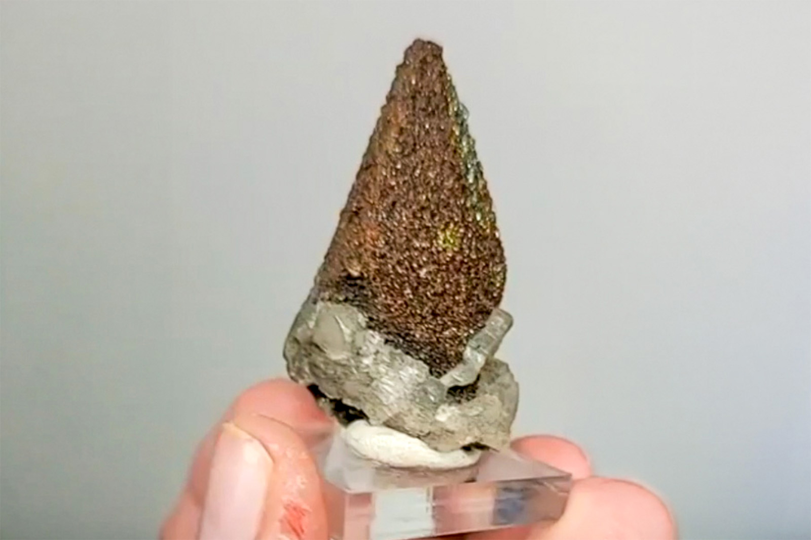

Calcite with Iridescent Pyrite Coating
"Brushy Creek Calcite Point"
V-02174
Brushy Creek Mine, Greeley, Reynolds County, Missouri, USA
Purchased 9/26/2024 from Black Dog Minerals for $61.82
Core Collection • In Collection
Details
Storage Type: Drawer
Storage Location: C1D3 Dark Matter Miniatures
Size class: Cabinet (0)
Dimensions: 2.6 × 2.3 × 4.7 cm
Mass: 28 g
Luster: Average, Metallic